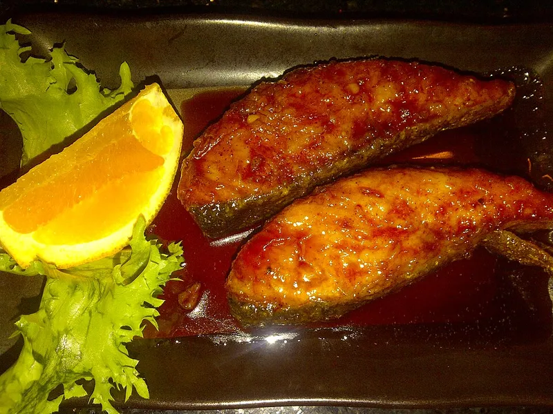

Quick快手 · Japanese日
Teriyaki Salmon照烧三文鱼
Pan-fry salmon until the skin is crisp, then glaze it with a quick sauce of soy, mirin and a little sugar. Done in about 15 minutes; serve with rice and broccoli for a meal a student can manage.三文鱼煎到皮脆，再淋上用酱油、味醂和一点糖收成的亮汁。十几分钟就够，配白饭和一份西兰花，是学生也能做成的一餐。

Ingredients食材
- Salmon fillet三文鱼排 340 g · 2 salmon fillets (about 170 g each, skin on)2 块三文鱼排（每块约 170 克，带皮）
- Soy sauce生抽 36 g · 2 tbsp (30 mL)2 汤匙（30 mL）
- Mirin味啉 30 g · 2 tbsp (30 mL)2 汤匙（30 mL） no mirin: use 1 tbsp cooking wine plus 1 tsp sugar没有味醂可用 1 汤匙料酒加 1 茶匙糖
- Sugar白糖 8 g · 2 tsp2 茶匙
- Ginger姜 5 g · a small piece, grated1 小块，磨泥
- Garlic大蒜 5 g · 1 clove, grated1 瓣，磨泥
- Canola oil菜籽油 14 g · 1 tbsp (15 mL)1 汤匙（15 mL）
- Short-grain rice短粒米(寿司米) 150 g · 150 g short-grain rice (about 3/4 cup), cooked短粒米 150 克（约 3/4 杯），煮成饭
- Broccoli西兰花 200 g · half a head, steamed or blanched 2 minutes半颗西兰花，蒸或焯 2 分钟
Weights are as bought, before trimming or peeling. Costco pack sizes and availability vary; see each ingredient page.重量为买回来的原重（去皮去骨之前）。Costco 规格与有无随时变化，点食材名看详情。
Method做法
- Pat the salmon dry and sprinkle a small pinch of salt on both sides.三文鱼用厨房纸擦干，两面各撒一小撮盐（不计入调料）。
- Stir the soy sauce, mirin, sugar, ginger and garlic together.调汁：生抽、味醂、糖、姜泥和蒜泥搅匀。
- Heat the pan, add the oil and lay the salmon in skin side down.平底锅烧热，倒油，三文鱼皮朝下放入。
- Press gently with a spatula for 10 seconds so the skin stays flat.用锅铲轻压 10 秒，防止鱼皮翘起。
- Cook over medium heat 4 minutes, until the flesh is cooked about two-thirds up the side, then flip.中火煎 4 分钟，看到鱼肉侧面熟了约三分之二，翻面。
- Cook 1-2 minutes more and blot excess oil from the pan with paper towel.再煎 1–2 分钟，用厨房纸吸掉锅里多余的油。
- Pour in the sauce and simmer 1-2 minutes over medium-low, spooning it over the fish, until syrupy.倒入调好的酱汁，中小火煮 1–2 分钟，不断把汁舀到鱼上，直到汁变浓稠。
- Serve with rice and broccoli, spooning over the glaze.装盘，配米饭和西兰花，淋上锅里的汁。
Keys to success成功要点
- Dry the fish thoroughly for crisp skin.鱼一定要擦干再下锅，才能煎出脆皮。
- A faint blush in the middle is tender (about 52-55°C inside). Health Canada recommends cooking fish to 70°C, so cook it through if you prefer to follow that.三文鱼中心有一点点粉红最嫩，内部约 52–55°C 是多汁的熟度；加拿大官方建议鱼肉熟到 70°C，怕风险就煎熟一点。
- The sauce is sugary, so keep the heat low at the end or it turns bitter.酱汁糖多，最后一分钟火要小，否则会焦苦。
- Make extra; it works cold or reheated in a lunchbox.多做一份，凉了放进便当，第二天口感依然不错。
Common problems常见失败与补救
- The skin sticks鱼皮粘锅
The pan was not hot or the fish was wet; wait until it releases before flipping.锅没热透或鱼没擦干；让它自己松动再翻，不要硬铲。 - The sauce burned and tastes bitter酱汁煳了变苦
Sugar scorches quickly; turn the heat low after pouring the sauce and stop as soon as it thickens, loosening with a spoon of water if needed.糖遇热焦化很快，倒汁后改小火，汁一变稠就关火；再加 1 汤匙水稀释。 - The fish is dry鱼肉太干
Keep the total under 6-7 minutes and stop at a faint blush; carry-over heat finishes it.不要超过 6–7 分钟总时间；中心还有一点点粉红时就关火，余热会继续。
Watch it done视频参考
Titled as the authentic pan-grilled teriyaki salmon, about four minutes with over 130,000 views; the same pan method as this recipe.标题是「平底锅煎的正宗照烧三文鱼」，约 4 分钟，十多万播放，和本菜用平底锅的做法一致。
Teriyaki salmon explained in Chinese with English subtitles, about five minutes.中文讲解的照烧三文鱼，附英文字幕，约 5 分钟。
Videos load only when you tap them (youtube-nocookie). Creators are credited; we do not host their videos.点了才加载视频（youtube-nocookie）。署名原作者，本站不托管视频。
Nutrition营养
| Energy热量 | 759 kcal |
| Protein蛋白质 | 43 g |
| Fat脂肪 | 30.6 g |
| of which saturated其中饱和脂肪 | 5.8 g |
| Carbohydrate碳水化合物 | 71.5 g |
| Fibre膳食纤维 | 3.8 g |
| Sodium钠 | 1112 mg |
High sodium钠偏高 Sodium tiers: under 345 mg lower, 345-689 mg moderate, 690 mg and above high (this site's tiers; 15% of the 2,300 mg daily reference = 345 mg).钠分档：低于 345 mg 较低，345–689 mg 中等，690 mg 及以上偏高（本站分档；345 mg ＝ 每日参考 2300 mg 的 15%）。
Computed from the Canadian Nutrient File (Health Canada) with the weights above; oil and sauces are counted in full. Real dishes differ.按加拿大营养素数据库和上面的重量计算；油和酱汁按全量计入，实际会略低。
Good to know适合 / 需注意
- About 43 g protein per serving, a protein-rich meal (adult reference intake roughly 50-60 g/day; needs vary).每份蛋白质约 43 g，属于蛋白质较高的一餐（成人每日参考量约 50–60 g，个体差异大）。
- About 1112 mg sodium per serving (about 48% of the 2,300 mg daily reference), on the high side; use less soy sauce or salt, and pair with unsalted sides.每份钠约 1112 mg（约占每日参考 2300 mg 的 48%），偏高；少放酱油或盐，或搭配无盐主食与蔬菜。
- About 71.5 g carbohydrate per serving, plenty; adjust the staple portion to your activity.每份碳水化合物约 71.5 g，较多；按活动量调整主食份量。
- Contains allergens: Fish, Soy, Wheat / gluten.含过敏原：鱼、大豆、小麦/麸质。
Salmon is rich in protein and mostly unsaturated fat. The soy sauce brings sodium, so do not drown the rice in the sauce.三文鱼的蛋白质和脂肪都不少，其中多为不饱和脂肪；酱油带来钠，酱汁不要全倒在饭上。